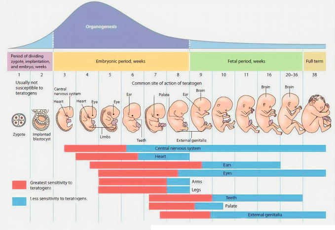

Learn · Chapter 15
Why does the timing of a developmental influence matter?
Learning goal
Distinguish embryonic and fetal development, identify the age convention used, and explain how timing, dose and susceptibility affect developmental outcomes.
Before you begin
Basic organ structures develop before full function. Placental exchange does not exclude all harmful substances.
Expected work: one completed lesson check. Supported practice, videos and textbook questions are optional. Saved writing is not automatically graded.
Chapter 15 · printed pp. 520–523
Key terms: · · ·
Key terms
Use these definitions when you need help with a term.
Two timelines can give different week numbers for the same stage because they start counting at different events. Age after starts with the joining of the gamete contributions. With , counting conventionally starts on the first day of the last menstrual period, abbreviated LMP. In an illustrative cycle where fertilization occurs two weeks after LMP, gestational age is about two weeks greater.
This chapter uses age after fertilization unless a question or source axis explicitly gives another convention. The two-week difference is a useful stated classroom assumption, not proof of a person's exact fertilization date. Cycle timing varies. A label such as “week ten” is incomplete for a comparison until we know which clock it uses.
The extends through about eight weeks after fertilization, with the first two weeks sometimes named separately as pre-embryonic. The begins in week nine after fertilization and continues until birth. The teacher's first-trimester panel lists weeks nine to twelve because those are the fetal weeks within that panel; they do not mark the end of the entire fetal period.
Check a source calculation: p. 520 pairs 266 days after fertilization with approximately forty weeks. But 266 ÷ 7 = 38 weeks. Roughly forty weeks belongs to the LMP-based gestational convention in the illustrative two-week-offset model. Do not give both numbers the same starting point.
During early development, the body plan and basic organ structures become established. During the fetal period, those structures enlarge and become more capable of their functions. Brain development, bone changes and lung maturation continue. Differentiation can continue during the fetal period; naming a new period does not turn off cell specialization.
Trimesters divide pregnancy into broad time groups. The early part emphasizes formation of structures. Middle development includes substantial body and brain growth, increasingly noticeable movements and development of skin coverings. Later development includes continued brain and organ maturation and increased fat deposition. These are broad patterns rather than abrupt switches or guarantees about an individual's function.
The teacher-source chart below makes a useful comparison: different systems have different periods of sensitivity. Its week numbers follow a developmental convention beginning with the dividing zygote and ending near 38 weeks; use this as an age-after-fertilization diagram. Follow the red and blue bands and their legend. The first indicates greatest sensitivity in this simplified model; the second indicates continuing lower sensitivity. Neither colour gives a numerical probability of harm.

[Figure: Teacher-source developmental timeline. Weeks one and two show zygote and implanted blastocyst, weeks three to eight the embryonic period, and weeks nine to thirty-eight the fetal period. Red bands mark greatest sensitivity in the source model, blue continuing lower sensitivity. Central nervous system, eyes and other systems retain later sensitivity. Later week intervals are not equally spaced. Early-stage wording must not be read as a safety guarantee. | ./assets/figures/ch15-source-critical-periods-slide21.png]Compare the central nervous system band with the arm and leg bands. The nervous-system row continues far into the fetal period because its development continues. The figure does not make every exposure act on every system in the same way. Also inspect the numbers: later columns jump from 11 to 16 and then to a 20–36 range. Equal drawn widths do not represent equal durations. Do not measure the bar with a ruler to calculate weeks.
The left-hand “usually not susceptible” wording is a source simplification, not a safe-exposure guarantee. Very early damage can have different consequences from damage during organ formation, and a developing blastocyst already contains different cell regions. A broad early-stage label cannot prove that an exposure is harmless. Likewise, a classroom timeline cannot establish whether an individual fetus could survive outside the uterus.
A is an environmental agent capable of disturbing prenatal development. Alcohol, some drugs and some infections are examples. For example, prenatal alcohol exposure can disrupt brain development and lead to lasting difficulties with learning, memory or attention as part of fetal alcohol spectrum disorders (FASD). Effects vary; this does not mean every exposed individual has the same condition or that a photograph can establish a diagnosis. Because the brain continues developing, this example also explains why concern is not confined to initial organ formation. Exposure means contact with the agent; it is not itself proof of a specific outcome. Risk depends on the agent, dose or amount, timing, duration and susceptibility, meaning how the developing system responds under those conditions.
During formation of a structure, a harmful influence may disrupt how its parts are organized. During later development, an influence can still affect growth or function, including the developing nervous system. The picture's red and blue bands summarize that difference. “Early” and “late” are too broad to identify the active process, and neither word establishes severity or safety by itself.
Some very early exposures are discussed through an “all-or-none” pattern: substantial damage may prevent continuing development, while limited early cell loss can sometimes be compensated for. This is a simplified pattern with exceptions, not a rule that all early cells are identical or all early exposures are safe. Use the supplied evidence rather than turning the phrase into an individual prediction.
If you encounter the optional vitamin C question on p. 528, notice that it assumes the source's p. 523 claim. Current evidence does not establish vitamin C as increasing birth-defect risk, and high-exposure evidence is limited. Reports of deficiency after birth do not establish a general birth-defect risk. Report the textbook's historical claim as a claim, rather than treating it as proven or inferring that unlimited amounts are safe. The textbook medication and supplement examples are not instructions to start, stop or change treatment; personal decisions belong with a qualified health professional.
For a course explanation, name the exposure and the process occurring at the stated stage, then explain a possible relationship and its limits. Do not infer a person's health, behaviour or responsibility from an exposure label or group identity. A biological risk explanation should remain within the evidence provided.
Worked example
Two hypothetical records describe exposure to the same agent at the same dose. In Record A, a named structure is being assembled. In Record B, that structure has formed but its growth and functional maturation continue. A learner says B must be harmless because it is later. Evaluate that conclusion.
Before applying that method to numbered weeks, align the age conventions. If an illustrative record gives gestational age of 14 weeks and explicitly assumes fertilization two weeks after LMP, the age after fertilization is 14 − 2 = 12 weeks. Check by adding back: 12 + 2 = 14. If the starting convention or offset is not supplied, do not silently assume an exact conversion. Then identify the process active at the stated developmental time, rather than using the week number alone as an answer.